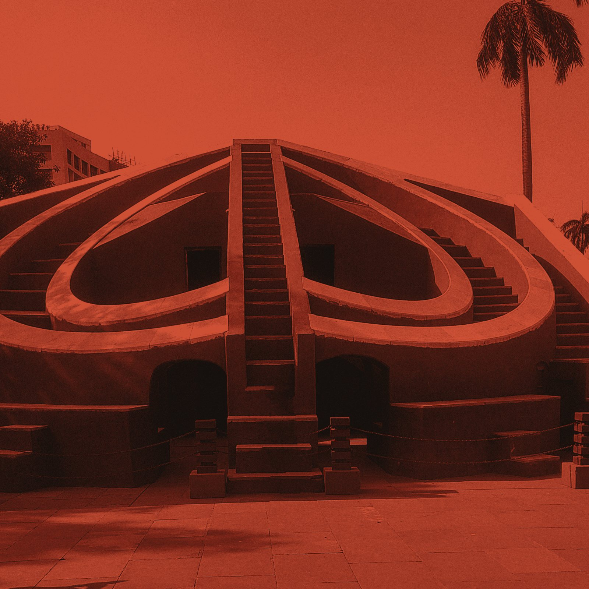
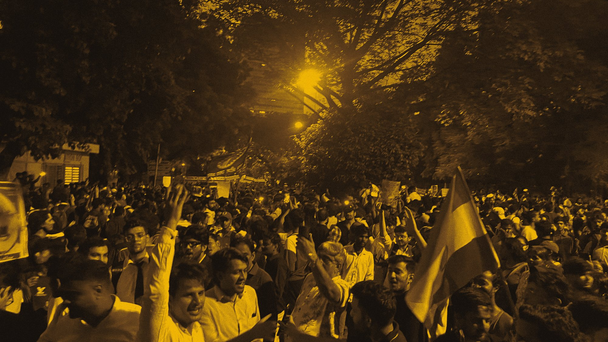
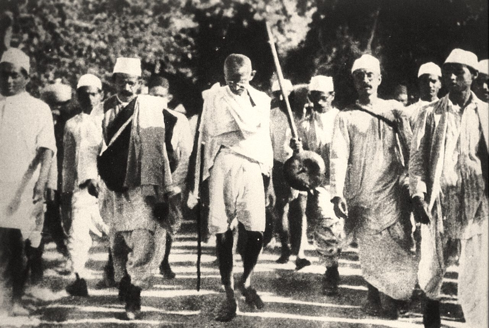
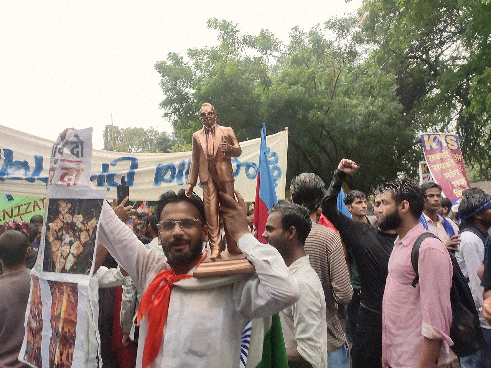
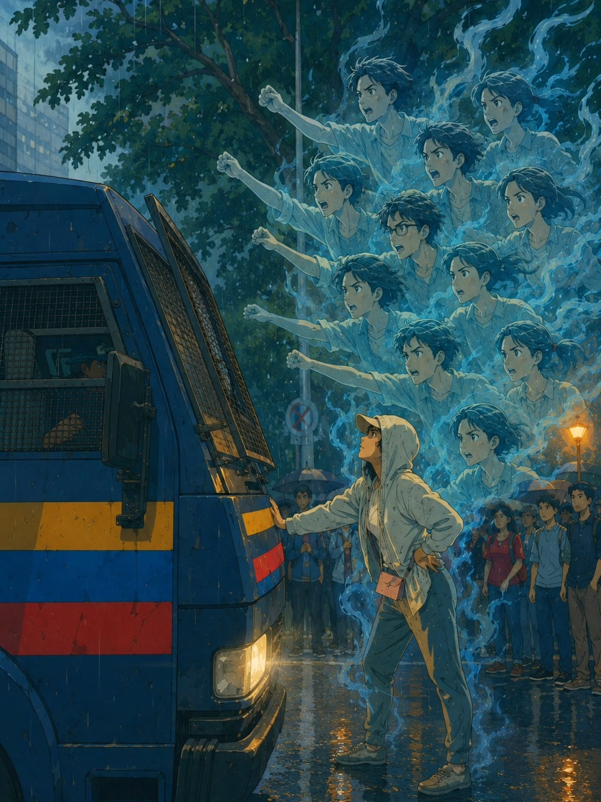

Global solidarity protest · 16–18 October 2026
Jantar Mantar is Everywhere
People in 21 cities across North America, Europe and Australia are coming together to stand with the protests in India — coordinated by SANGAM, the South Asian Network for Global Action & Mobilization.
Vancouver
Sat 17 Oct · 2:00 PM
Vancouver Art Gallery, 750 Hornby Street
On the streets in
16 OctLondonErlangen
17 OctGöttingenBerlinDublinThe HagueGothenburgHelsinkiPragueFreiburgTorontoVancouverMontrealLos AngelesPhiladelphiaChicagoAustin
18 OctMelbourneSydneyBrisbaneNew York

Solidarity gatherings · Vancouver, BC
Standing with the Cockroach Janta Party protests in India.
Gatherings in Vancouver, in solidarity with the people on the streets of Delhi and other Indian cities.
Next meetup
Updated 15 Oct 2026
Saturday
Oct 17
2:00 PM PT
Vancouver Art Gallery
750 Hornby Street, Vancouver
What to bring: banners, water, warm clothing, and a mask if you’re uncomfortable with your face showing up.
The demands
Three demands for electoral integrity
Protect Every Vote. Demand Accountability. Defend Democracy.
Quoted word for word from the Cockroach Janta Party’s petition at cockroachjantaparty.org.
-
Immediate accountability
- Resignation of Gyanesh Kumar in 48 hrs.
- Initiate criminal proceedings and answer: Who gave him the orders?
-
Freeze the polls. Freeze SIR.
- Put all upcoming polls on hold.
- Freeze SIR and roll back to the January 2025 voter list.
- Constitute an Independent Inquiry Commission to examine how SIR decisions were taken.
- Direct the Supreme Court to seize all files related to SIR and its decision-making process.
-
Independent leadership
- Repeal the 2023 law on the appointment of Election Commissioners.
- Enact a new law that inspires public confidence, with active participation from civil society.
What’s happening
India’s Election Commission has been running a nationwide “Special Intensive Revision” of the voter rolls. Reports put the number of names struck off at roughly 130 million. Two election commissioners have questioned the exercise, and opposition parties say it tilted recent state elections. The Commission and the ruling party deny any wrongdoing.
On 10 October, Delhi was locked down ahead of the Cockroach Janta Party’s rally at Jantar Mantar: mobile internet suspended, metro stations shut, and over 7,000 people detained in the capital alone — the movement’s leaders among them. A court ordered their release the next day.
Sources CJP: Three demands for electoral integrity Al Jazeera, 10 Oct 2026 The Indian Express
The voter rolls, the objections inside the Election Commission, and the Delhi crackdown.
“We will only end the protest after Gyanesh Kumar resigns.”
From the streets
They showed up. Now it’s our turn.




